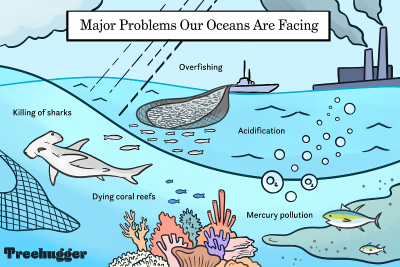

Sustainable Fishing: Balancing Industry and Conservation
Understanding the importance of responsible fishing practices, marine protected areas, and consumer choices for a healthier ocean.
Introduction
Oceans provide food, jobs, and ecological balance, but overfishing threatens marine biodiversity. Catching fish faster than they can reproduce leads to population declines and ecosystem disruptions. To maintain this balance, sustainable fishing is crucial.
🐟 The Impact of Overfishing
Declining Fish Populations
Many species, such as tuna and cod, are being overfished to the point of collapse, impacting marine ecosystems and the fishing industry.
Disrupting Marine Ecosystems
Removing too many fish from the ocean affects the food chain, leading to imbalances that can cause the decline of other marine species.
Bycatch and Habitat Destruction
Unsustainable fishing methods often catch unintended species (bycatch), including sea turtles and dolphins. Bottom trawling damages seafloor habitats, further threatening marine life.
🌊 Solutions for Sustainable Fishing
Marine Protected Areas (MPAs)
MPAs restrict fishing in designated zones, allowing fish stocks to replenish and ecosystems to recover.
Responsible Fishing Practices
Catch limits, seasonal restrictions, and selective gear reduce overfishing and bycatch, ensuring long-term fish population health.
Consumer Choices
Consumers can support sustainability by choosing seafood with certifications like MSC or ASC, diversifying their seafood choices, and purchasing from responsible fisheries.
Conclusion
Sustainable fishing is essential to protect marine biodiversity and ensure future food security. Through responsible practices, protected areas, and informed consumer choices, we can balance industry needs with conservation efforts.